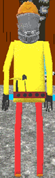
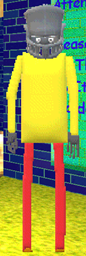
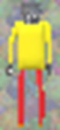

"Maldo" is the main character and antagonist of the "Maldo series". He also appears in "Freddo's Awsome Math Game!"(/"FAMG"). He replaces Baldi and Arts and Crafters.
Aliases
Maldo, Mald, Maldy, Good guy!!.
Appearance
(MGCGD/MM/FAMG) Maldo appears as a poorly modeled human(?) wearing a knight helmet, leaving only his eyes visible. He wears a yellow shirt, red pants, brown shoes, and dark gray gloves. His body is clearly copied from Baldi. In the case of MGCGD, he also wears a brown tool belt (with a hammer and a tiny shovel strapped to it), and an orange construction helmet.
Gallery
Maldo's Great Construction Game! Demo!

Maldos Mansion

Freddo's Awsome Math Game!

Trivia
Maldo is good pals with Dave and Freddo.
Maldo likes to hang out at Freddo's Epic School.
Maldo has one mansion, the other one (seen in MGCGD) was never finished as he run out of funds for the project.